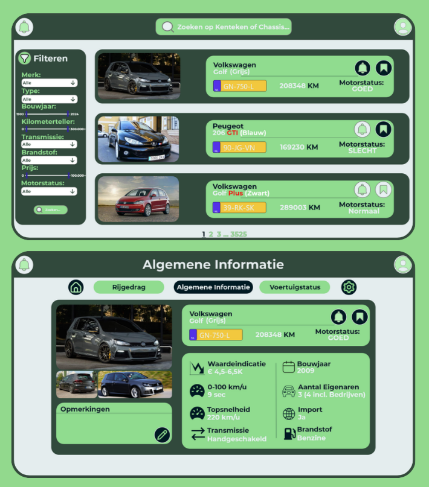
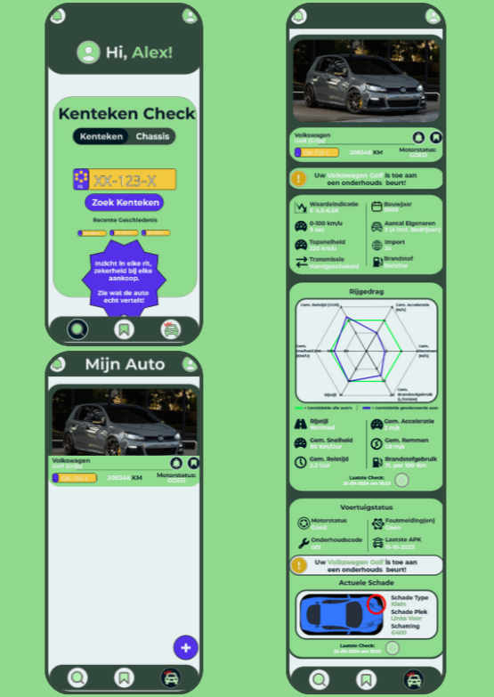

I


Responsive interface across desktop and mobile.
Fig. 01
Plate I
Smart Drive — UX/UI voor een dataplatform.
De opdracht was om een digitaal product te ontwerpen met een responsive design dat geschikt is voor meerdere apparaten, waarbij ik verschillende soorten data moest weergeven. Ik had de vrijheid om zowel de doelgroep als het doel van het product te bepalen, mits het ontwerp effectief functioneerde op verschillende schermformaten.
AutoInsight is een slim dataplatform dat voertuiggegevens verzamelt en analyseert voor autodealers, garages, fabrikanten en consumenten. Het systeem gebruikt realtime data over rijgedrag, onderhoudsstatus en prestaties om transparantie en efficiëntie in de autosector te verbeteren.
Read the full case →